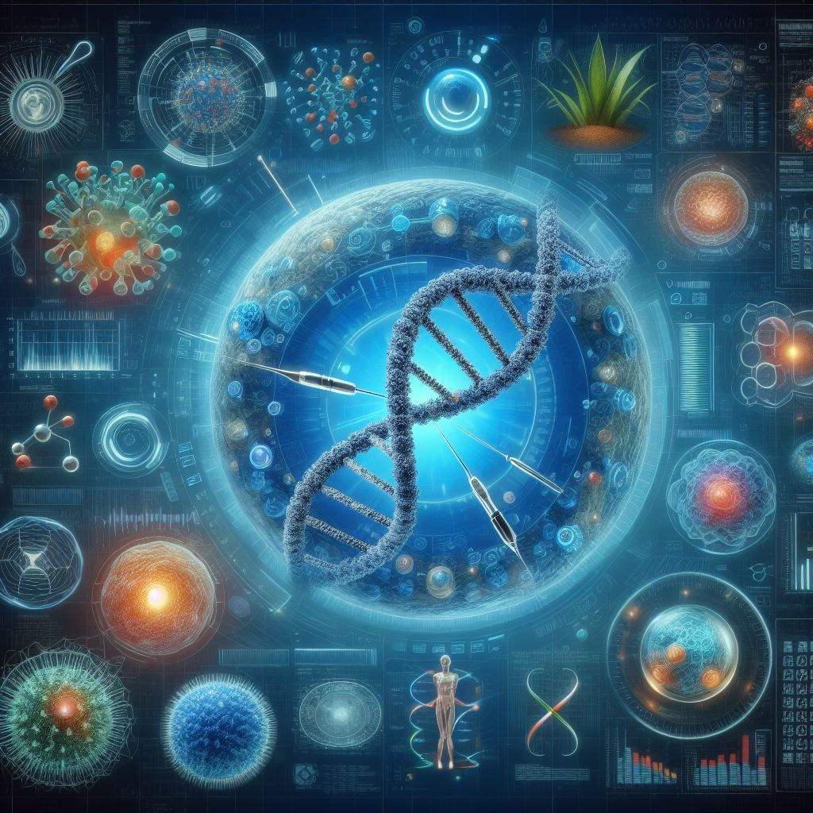

3 innovaciones tecnológicas que están reescribiendo la bioética

En un mundo donde la ciencia ficción se convierte rápidamente en realidad científica, nos enfrentamos a fascinantes dilemas.
Uno de estos dilemas emergentes es, ¿cómo equilibramos el vertiginoso avance tecnológico con nuestra responsabilidad ética? Desde el poder de editar la vida misma hasta la promesa de una medicina más personalizada, estamos en el inicio de una nueva era.
En esta entrada, te invito a un viaje a través de tres innovaciones revolucionarias. Discutiremos las maravillas y retos de CRISPR-Cas9, las células madre y la inteligencia artificial en medicina. Estas tecnologías están redefiniendo lo que es posible, desafiándonos a la vez a reexaminar nuestras convicciones éticas más profundas.
1. CRISPR-Cas9
CRISPR-Cas9, una tecnología de edición genética, ha revolucionado la biología molecular desde su descubrimiento. Actúa como un par de «tijeras moleculares», cortando y modificando secuencias específicas de ADN. Esta técnica es más precisa y eficiente que métodos anteriores, lo que la hace invaluable en investigación genética.
Al corregir mutaciones dañinas, CRISPR tiene el potencial de curar enfermedades genéticas. En agricultura, permite desarrollar cultivos más resistentes y nutritivos. Incluso puede usarse para estudiar y posiblemente modificar características humanas, abriendo puertas a mejoras en salud y bienestar.
Sin embargo, CRISPR enfrenta dilemas bioéticos significativos. La edición genética plantea preguntas sobre la eugenesia y la alteración de la línea germinal humana. Estas modificaciones pueden ser heredadas, lo que afectaría a generaciones futuras.
Las implicaciones éticas de modificar características humanas, como la inteligencia o la apariencia física, son profundas y controvertidas. Además, su uso en la biodiversidad puede tener efectos impredecibles en nuestros ecosistemas.
Para navegar estos dilemas, surgen varias alternativas. Primero, se debe asegurar que cualquier intervención sea éticamente justificable y realizada de manera responsable. Esto implica considerar los posibles riesgos y beneficios, así como las consecuencias a largo plazo para los individuos y la sociedad.
Segundo, se debe promover el debate público informado sobre los beneficios y riesgos de CRISPR. La inclusión de diversas perspectivas ayudaría a guiar decisiones éticas.
Tercero, hay que fortalecer la investigación sobre los impactos a largo plazo de la edición genética, tanto en humanos como en la biodiversidad.
En resumen, CRISPR-Cas9 ofrece oportunidades sin precedentes para el avance científico y el bienestar humano. Sin embargo, debe utilizarse con una consideración cuidadosa de sus implicaciones éticas. La colaboración entre científicos, bioeticistas, legisladores y la sociedad es clave para su uso responsable.
2. Células madre
Las células madre, conocidas por su capacidad de diferenciarse en varios tipos de células, son fundamentales en la medicina regenerativa. Pueden renovarse y transformarse en tejidos especializados, lo que las convierte en herramientas cruciales para la investigación. Sus dos tipos principales son las células madre embrionarias, derivadas de embriones, y las adultas, encontradas en tejidos maduros.
En medicina regenerativa, las células madre pueden reparar o reemplazar tejidos dañados, ofreciendo esperanza en enfermedades crónicas y lesiones. Su uso en la terapia celular promete tratamientos para afecciones como la diabetes, enfermedades cardíacas y neurodegenerativas. Además, las células madre son esenciales en la investigación de enfermedades, permitiendo estudiar su desarrollo y encontrar nuevas terapias.
No obstante, su uso presenta dilemas bioéticos significativos. Las células madre embrionarias, en particular, generan controversia debido a su origen. La utilización de embriones humanos en la investigación plantea preguntas difíciles de responder sobre sus derechos putativos.
Además, existe una preocupación creciente sobre la comercialización y explotación de las células madre. También hay temores sobre los riesgos de abuso en tratamientos no probados científicamente.
Para abordar estos desafíos, se han propuesto algunas estrategias. Primero, se podría fomentar el empleo de células madre adultas y técnicas de reprogramación celular, que no impliquen la recolección de embriones. Esto reduciría las preocupaciones éticas relacionadas, manteniendo el potencial terapéutico.
Segundo, es necesario establecer marcos regulatorios claros y efectivos para supervisar la investigación con células madre. Se tendrían que tomar medidas para garantizar que se adhieran a estándares éticos y científicos rigurosos.
Tercero, hay que promover regulaciones internacionales para contrarrestar el turismo médico. El turismo médico se refiere a viajar a otro país para recibir tratamientos médicos no validados científicamente.
En conclusión, las células madre poseen un enorme potencial para revolucionar la medicina y la salud humana. Su utilización debe ser equilibrada con una profunda reflexión ética. Este equilibrio debe mantener un compromiso con el bienestar de todos los individuos y de la sociedad en su conjunto.
3. Inteligencia artificial en medicina
La inteligencia artificial (IA) en medicina representa una fusión revolucionaria de tecnología y atención sanitaria. Su capacidad para procesar grandes cantidades de datos y aprender de ellos es su característica distintiva. La IA en medicina abarca desde sistemas de diagnóstico hasta algoritmos que ayudan en la planificación del tratamiento.
La IA puede mejorar el diagnóstico de enfermedades, personalizando tratamientos basados en patrones complejos dentro de los datos del paciente. En investigación clínica, acelera el descubrimiento de medicamentos y optimiza ensayos clínicos. La IA también juega un rol crucial en la predicción de brotes de enfermedades y en la gestión de recursos sanitarios.
Sin embargo, la integración de la IA en medicina plantea dilemas bioéticos. Sesgos en los algoritmos podrían crear o incrementar brechas entre diferentes grupos socioeconómicos.
La autonomía del paciente puede verse comprometida si la IA toma decisiones sin supervisión humana. Además, la privacidad de los datos y la seguridad cibernética son críticas en el manejo de información confidencial del paciente.
Para abordar estos dilemas, se han propuesto varias medidas. Primero, se debe garantizar la transparencia e interpretabilidad de los algoritmos de IA. Los profesionales médicos deben entender cómo la IA llega a sus conclusiones.
Segundo, hay que implementar medidas rigurosas de protección de datos y privacidad. Esto incluye protocolos robustos para el manejo y almacenamiento de datos de pacientes.
Tercero, debemos desarrollar normativas que aseguren que la IA en medicina cumpla con estándares éticos apropiados. Esto incluye la verificación de su precisión y la mitigación de sesgos.
En resumen, la IA en medicina ofrece oportunidades extraordinarias para mejorar la atención sanitaria y la investigación médica. Sin embargo, su implementación debe ser cautelosa, asegurando que se respeten la ética médica y los derechos de los pacientes.
La colaboración es esencial para aprovechar el potencial de la IA de forma responsable y segura. Este esfuerzo conjunto involucra a desarrolladores de IA, profesionales de la salud, bioeticistas y legisladores. Juntos, podemos garantizar que la IA se utilice de manera ética y efectiva en el ámbito de la salud.
Conclusión
En la intersección de la tecnología y la bioética, encontramos un terreno fértil para el avance científico y el progreso humano. Hemos explorado tres tecnologías revolucionarias: CRISPR-Cas9, células madre y la IA en medicina. Cada una de ellas, con su potencial para transformar nuestra salud y bienestar, trae consigo también desafíos éticos significativos.
CRISPR-Cas9, con su capacidad para editar genéticamente organismos vivos, nos enfrenta a preguntas sobre la manipulación genética y sus implicaciones a largo plazo. Las células madre, con su poder regenerativo, nos llevan a reflexionar sobre la vida humana en sus inicios. La IA, al transformar la atención médica en la toma de decisiones, plantea dilemas sobre la autonomía, la privacidad y la seguridad del paciente.
A través de estas tecnologías, vemos un espejo de nuestras propias capacidades y limitaciones. Estos avances no solo representan un salto hacia delante en la ciencia, sino también una oportunidad para examinar y reafirmar nuestros valores éticos. Nos desafían a preguntarnos no solo qué podemos hacer, sino qué deberíamos hacer.
A medida que navegamos por estas aguas inexploradas, la clave es una colaboración continua y consciente entre científicos, bioeticistas, legisladores y la sociedad. La creación de marcos éticos sólidos y regulaciones adaptativas es crucial en el uso de tecnologías avanzadas. Esto nos permitirá beneficiar a la humanidad, respetando nuestros principios éticos fundamentales.
Nos encontramos al inicio de una era donde la ciencia y la ética pueden coexistir en armonía. Esta unión impulsará innovaciones transcendentales que respeten la dignidad y el bienestar humano.
La responsabilidad de dar forma a este futuro es una tarea colectiva. Juntos, podemos asegurar que los avances científicos satisfagan las necesidades más profundas y acuciantes de la humanidad. Con un enfoque cuidadoso y considerado, el futuro de la tecnología en medicina y biología no solo es prometedor, sino también esperanzador.
Te invito a unirte a nuestra comunidad en Discord. Ahí, podrás compartir tus opiniones, aprender de otros y contribuir activamente al diálogo sobre el futuro ético de la ciencia y la tecnología.